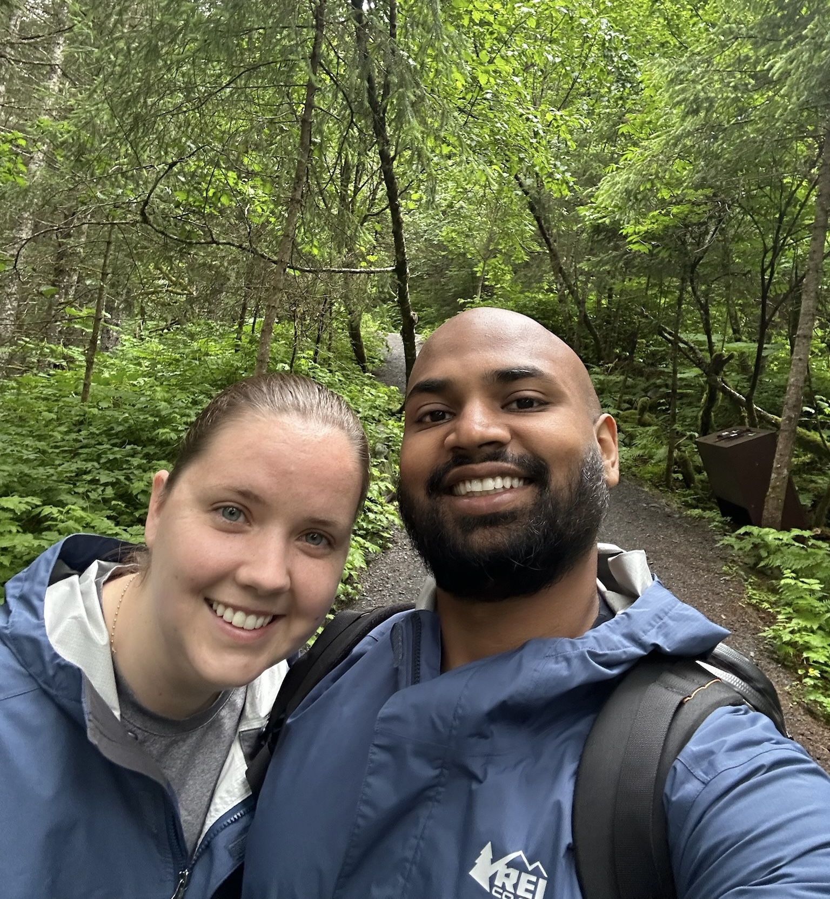
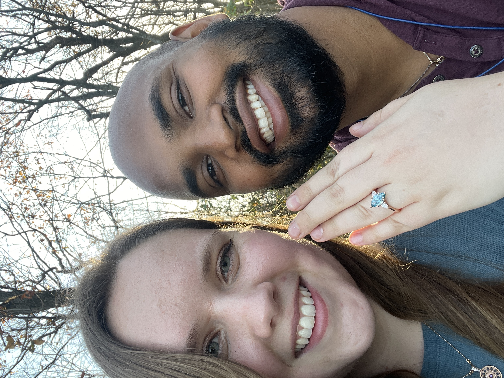
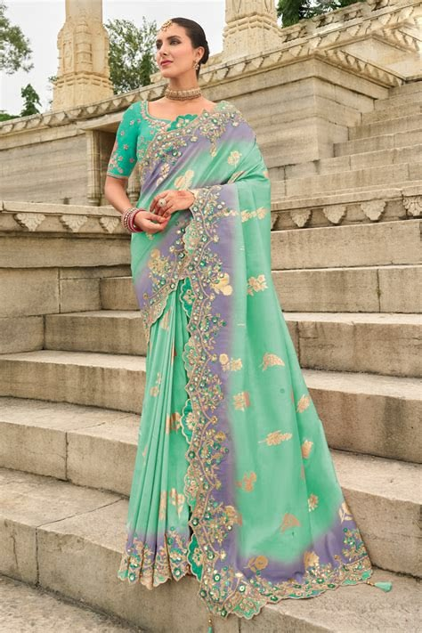
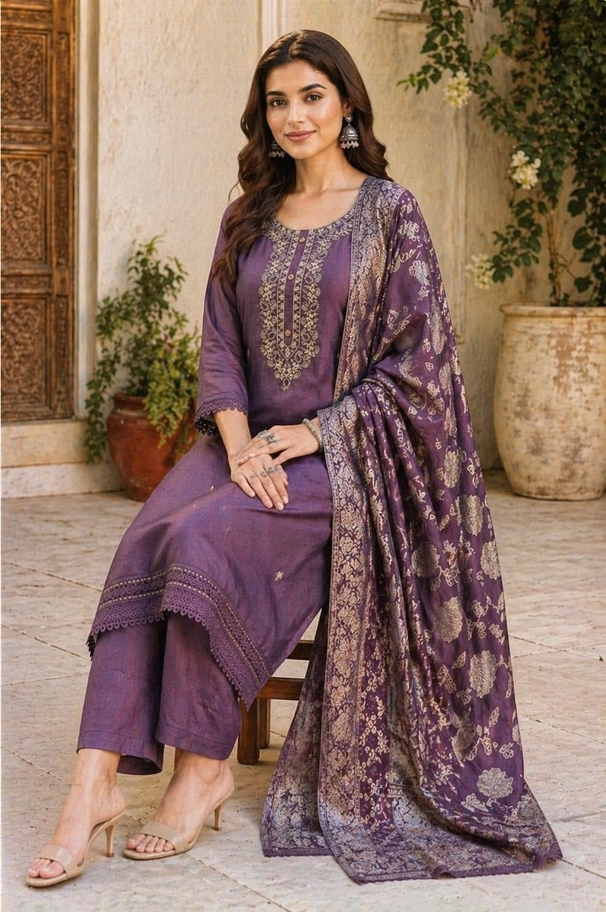
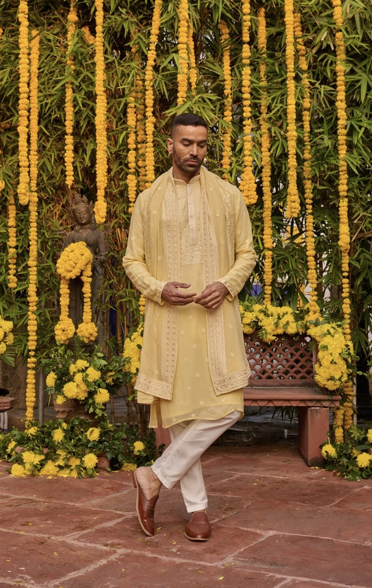
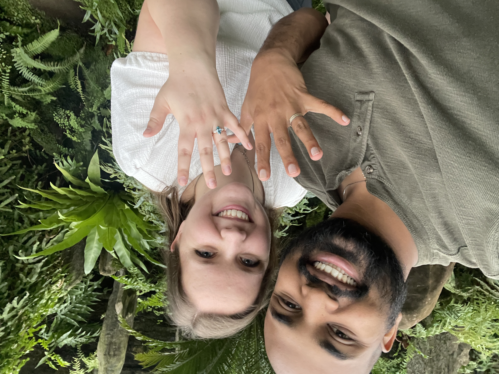
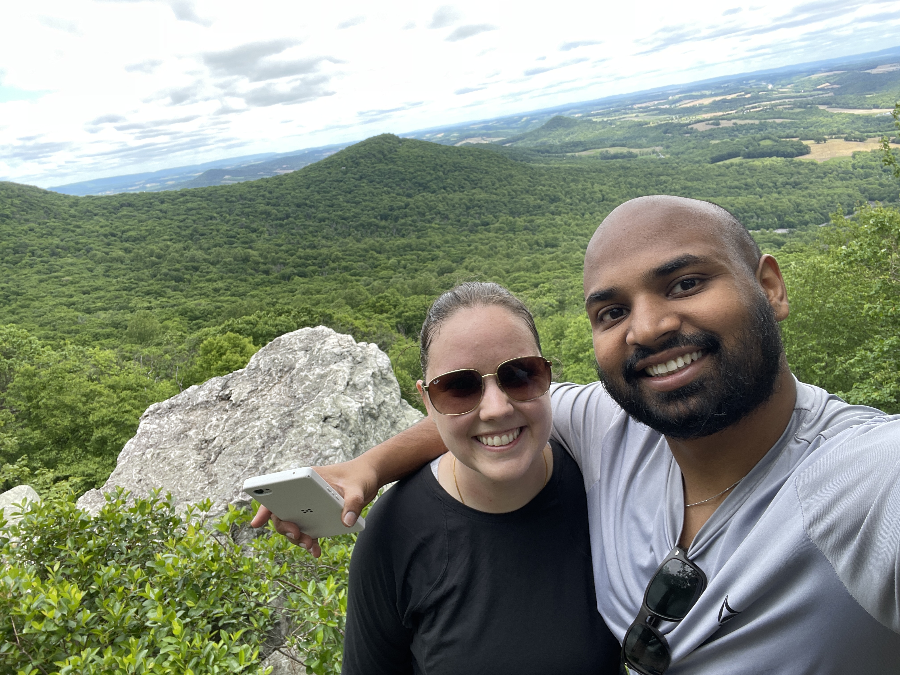

India Wedding
Sunday, January 24, 2027
Bangalore, India
Two celebrations, one love story

We would love to celebrate with you at both occasions, but we also understand that two weddings across the world from each other may not be logistically feasible for everyone. Please join for one or both, whichever works for you!
India Wedding
Sunday, January 24, 2027
Bangalore, India
U.S. Wedding
Friday, April 30, 2027
Philadelphia, Pennsylvania
Our love story didn’t start when we were born on opposite sides of the USA—Vai in California, Ariel in Maryland—exactly three days apart. It didn’t start when we grew up on opposite sides of the world, Vai in Bangalore and Ariel in Denver. It didn’t even start when we both moved to Philadelphia in the summer of 2018 to pursue graduate studies at UPenn and lived half a block away from each other. It took until May 2023 and a match on Hinge to get our love story started. Our first date was a comedy of errors; we didn’t realize there would be a two-hour wait at the bowling alley, so we decided to catch a movie Vai had heard was good. Turns out a horror film about paranoid schizophrenia isn’t great first date material! We quickly bailed and ended up spending hours walking all over the city and talking about everything. By the end of the first date, we were both smitten.


We quickly started building a life together; Vai got into board games and Ariel got into capital-f Films. Together we’ve explored foreign countries, film festivals, glacier hikes, and even an Improv 101 class. In November of 2025, Vai constructed an elaborate scavenger hunt that ended up driving us to Hawk Mountain, Pennsylvania where he asked Ariel to marry him. She said a resounding yes and posed the same question to him a few weeks later at Morris Arboretum. We feel so lucky to get to spend the rest of our lives together, and can’t wait to celebrate with you!
January 23rd, 5-8PM
Mariposa, K.G. Nelaguli, Karnataka 560116
January 24th, 10-12PM
Mariposa, K.G. Nelaguli, Karnataka 560116
You should plan to fly to Kempegowda International Airport (BLR) in Bangalore. From the U.S., the most common layover stops are Singapore from the west coast and London and Frankfurt from the east coast. Dubai and Doha are usually good stopovers too, but based on our experience in March 2026, we recommend holding off from flying through there for a little while...
Yes! An e-Tourist visa is easy and quick to get. Go to https://indianvisaonline.gov.in/evisa/ and follow the directions there. You should get an email that your application is approved within a few days. That email will give you a link to a PDF with your details and photo, which is your e-visa. Print it out and store it with your passport; you'll need to present both at the airport in the U.S. and in India.
We will arrange your accommodation the nights of January 22nd-24th for guests traveling in, including shuttles to and from the wedding location. Exact hotel location TBD.
First off, do NOT rent your own car. We cannot recommend driving in cities in India unless you're coming with years of experience driving in cities in India. Seriously. Our recommendations are:
Bangalore in February is usually in the 70s and 80s Fahrenheit in January, which should be a welcome respite for us living in North America! Pack accordingly, but note that India is a pretty conservatively-dressed culture. We recommend pants instead of shorts for both men and women. Cleavage is also very taboo.
There's tons of options both near and far, reach out to us and we're happy to help you plan an itinerary! Here are a few options to jumpstart planning:
Women have lots of options for wedding guest outfits in India. Most traditional in south India is a sari, a long piece of fabric tied to form a skirt and then draped over the shoulder, with a matching blouse. These can be a little intimidating to wear for the first time as a westerner! If you love this look, probably buy a "pre-draped" or "ready to wear" sari that comes stitched into skirt shape.
Another great option is a churidar, consisting of a long tunic and trousers. These will typically come with a dupatta, a piece of fabric that's pinned to the shoulder.
Other options from other parts of India are a lehenga (a long, wide skirt with blouse) or an anarkali (a long dress, usually with long sleeves).
Shoes are typically dressy sandals; because our events are being held outdoors on uneven ground, please emphasize comfort and mobility!
There's no concept of "don't outshine the bride" in Indian weddings; bright colors, patterns, jewelry jewelry and more jewelry is encouraged! Red is the traditional bridal color and most people will avoid it, but it's not a hard rule like no wearing white to a western wedding would be.



The traditional wedding guest outfit for men in southern India is called a kurta: a knee-length tunic and close-fitted trousers. This can also come with a jacket, a vest, or a chunni that's worn around the neck. Lots of Indian men will also wear a western-style suit to weddings.
Shoes are often dressy sandals, but as with the women, emphasize comfort and mobility.
April 30th, 6-11PM
Morris Arboretum
100 E Northwestern Ave, Philadelphia, PA 19118
Cocktail hour and reception to follow
The wedding is in the quiet Chestnut Hill neighborhood of Philadelphia. There are a few hotels in this area, but your selection (and things to do) will be much greater closer to Center City, Bala Cynwyd, or Manayunk. Feel free to reach out for more specific recommendations if it's your first time to Philly!
Morris Arboretum is about a 45 minute drive from the Philadelphia airport and about 30 minutes from Center City. There's a large parking lot onsite, so feel free to drive yourself. Ubers are available as well, but may take a few extra minutes to arrive compared to in the city proper.
The dress code is cocktail; suits, cocktail dresses, jumpsuits, and dressy separates are all appropriate. The ceremony and cocktail hour will be outdoors barring extreme weather, so we'd prefer you choose something comfortable and factor in layers. There will be some walking on uneven ground and on grated platforms, so leave your stilettos at home.
A few favorite snapshots from the adventures that brought us here.

